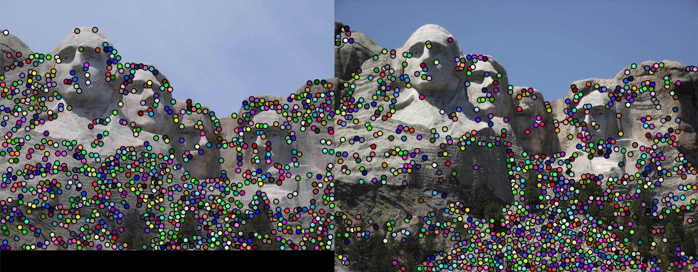
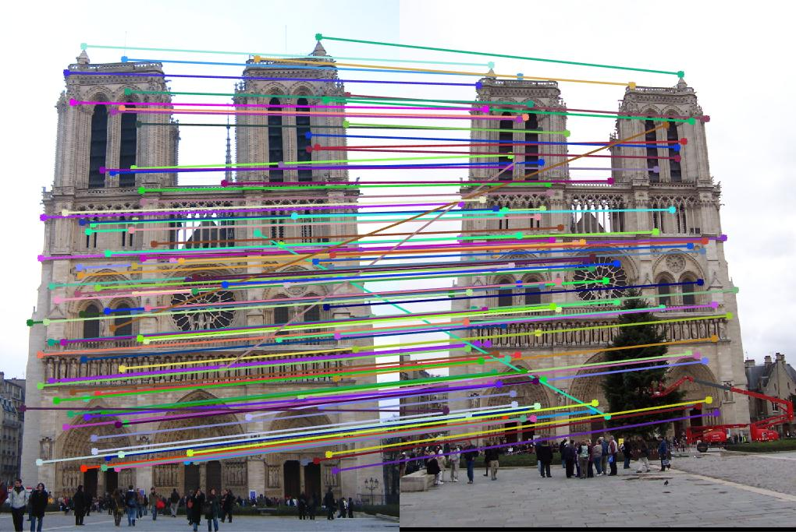
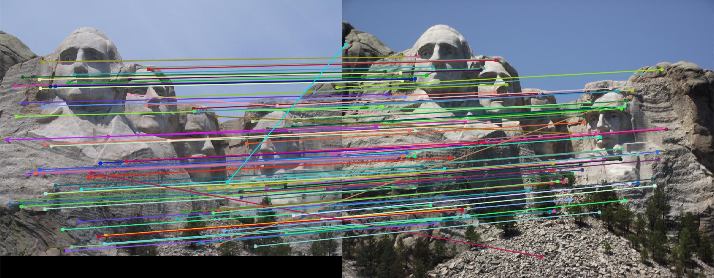
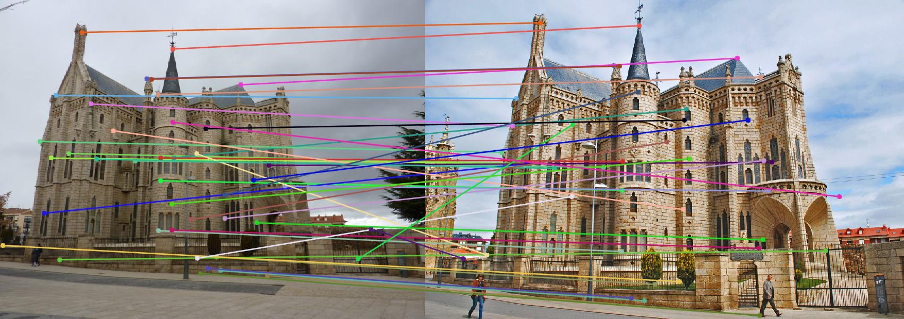

Local Feature Matching using Harris Corners and SIFT
| Class | Instructor | Date | Language | Ta'ed | Code |
|---|---|---|---|---|---|
| CS 6476 Computer Vision | James Hays | Fall 2015 | MATLAB | No | Code N/A |
|

That's a lot of points - 1000 initial interest points on Mount Rushmore. |
This project was concerned with implementing an algorithm that could recognize similarites between two images by finding interesting features in each and matching these features accurately. Through this mechanism a sufficiently high accuracy level of the matchings would imply that the images were of the same thing. The algorithm driving this process had 3 parts :
- Find Interesting Points in Each Image
- Devise a Descriptor for These Points
- Match Descriptors of Points in Both Images.
Part 1 : Finding Interest(ing) Points - Harris Corner Detector
What is an interesting point? For our purposes, we define "interesting" as the state of being recognizable and somewhat unique, at least locally. In other words, the point we find interesting will be easily distinguishable from its immediate surroundings - if we were to obvserve the image with a jeweler's glass, we want to find an area we can easily recognize. Computationally, we achieve this by finding areas of multi-directional gradients in intensity around a single pixel in the image, characteristics most obviously seen in corners.
A word about gradients. In an image, gradients are used to describe a change in intensity or color. A straight edge, like a wall, will show a significant gradient in a single direction, normal to the edge, denoting the change in intensity between the wall and its background in the image. Corners will exhibit gradients that radiate outward, starting normal to one of the constituent edges of the corner and sweeping around to the other.
For my implementation of the corner detection, I followed a multi-step recipe.
- Filter Images with Derivative of Gaussian in X and Y, revealing edges in each direction. I implemented both the Harris computational stencil and the Derivative of Gaussian method for building the filter kernel, and ended up using the Derivative of Gaussian because the results were stronger. I also used a variety of methods to arrange my image as I convolved it with the filter - keeping colors independent, averaging the three channels(Intensity in the HSI model) or finding the mean of the extremal values in each channel (Lightness in the HSL model), and ultimately chose the Lightness model, which gave an improvement of 2-3% in match accuracy, all other elements of the algorithm being equal. I used my implementation of MyImFilter and specifically FFT, from the first project for the convolutions, since I understood it and already had some built in utilities to manage different channels.
- I built the components for the Cornerness Function, the three component matrices of the outer product of the two resultant edge image matrices convolved with a weighting function (another, larger Gaussian). I then used these components to derive the Cornerness function, using an alphaR value of .06 as suggested in the text.
- I then thresholded the images, by first building a mosaic-like image representing a uniform intensity in a small neighborhood around a particularly bright spot in the Cornerness image, and then iteratively deriving an appropriate threshold on these patches (using adaptive time stepping/threshold modification) to find the number of points I wanted from each image. I had to take care to not find points too close to the edge of the image, since this would compromise the descriptor building in Part 2, which required a block of, in my case, 16x16 pixels to comprise the neighborhood around each point.
- Notre Dame Image 2 results can be seen below.
Notre Dame Image 1
%Building Edge Images
sig = 1;
sz = (sig*4)+1;
dgfilter=fspecial('gauss',[sz, sz], sig);
[dgx,dgy] = gradient(dgfilter);
%gradient of image in x dir
Ix = myImFilter(image, dgx,filterMethod);
%gradient of image in y dir
Iy = myImFilter(image, dgy,filterMethod);
| 1) Derivative of Gaussian in X Convolution | Derivative of Gaussian in Y Convolution |
 |
 |
%Building Cornerness Image
sig = 2;
%gaussian local weight - resize for convolution
w = fspecial('gauss', feature_width+1, sig);
Ix2 = conv2(Ix(:,:,1).^2, w, 'same');
Iy2 = conv2(Iy(:,:,1).^2, w, 'same');
Ixy = conv2(Ix(:,:,1).*Iy(:,:,1), w, 'same');
Hs = (Ix2.*Iy2 - Ixy.^2) - alphaR*(Ix2 + Iy2).^2;
| 2)Gaussian Convolved X*X edges | Gaussian Convolved Y*Y edges |
 |
 |
| 2)Gaussian Convolved X*Y images | Solution to the "Cornerness" function |
 |
 |
%Thresholding with Adaptive Timestep
%build boundary of no interest points around edges, for feature assignment
tmpHs = zeros(size(Hs));
tmpHs(bounds:(picH-bounds),bounds:(picW-bounds),:) = Hs(bounds:(picH-bounds),bounds:(picW-bounds),:);
Hs_prime = ordfilt2(tmpHs, orderth, ones(fwp1)); %2X as fast as colfilt on this data
lNumPts = .999 * numPtsDesired;
hNumPts = 1.001 *numPtsDesired;
maxIters = numPtsDesired * 10;
threshDir = 0;
lRate = .01;
while(((numPts < lNumPts)||(numPts > hNumPts)) && (iters < maxIters))
%i say, adaptive time step, my good man!
if(numPts < lNumPts)
thresh = thresh - lRate;
if(threshDir == 1) %if last time it went up, then it's bouncing, decrease lRate
lRate = lRate * .51;
elseif (threshDir == -1) %last time went down too, increase lRate
lRate = lRate * 1.9;
end
threshDir = -1;
elseif (numPts > hNumPts)
%thresh = thresh * 1.001;
thresh = thresh + lRate;
if(threshDir == -1) %if last time it went down, then it's bouncing, decrease lRate
lRate = lRate * .51;
elseif (threshDir == 1) %last time went up too, increase lRate
lRate = lRate * 1.9;
end
threshDir = 1;
end
%finds actual corner point in patch that exceeds threshold
HsNew = (Hs_prime > thresh ) & (Hs_prime == tmpHs);
numPts = sum(sum(HsNew));
iters = iters+1;
end
| 3)Neighborhoods used to Threshold Points | Interest Points -> Max Points in the Neighborhoods |
 |
 |
Part 2 : Describing these points - Building a SIFT-inspired Descriptor
How can we clearly describe these interest points that we have accumulated in each image? Since our interesting points are described as being locally distinguished via their gradients, we use the orientation of these gradients to help describe these points. We also look at the orientation of the gradients in a neighborhood around the points, extending our definition of "interesting" from part 1 (where we say a point is interesting if we can distinguish it within a small neighborhood) to include the neighborhood itself (i.e. using gradients to distinguish characteristics within small neighborhoods from other similar sized neighborhoods within the image).
The algorithm to accomplish this consisted of convolving our image with directional filters to derive the gradients in each of 8 directions, then examining a patch around each interest point, weighted with a Gaussian centered on the interest point, to accumulate a histogram of gradients in each direction, in each of 16 bins around the interest point, for a grand total of 128 values in the descriptor for each interest point. In more specific detail :
- Find the Gradients of the image in each of 8 directions (+\- 45, 90 and 135 degrees, along with 0 and 180). I again used the Derivative of Gaussians for this filter, finding the derivative in the X and Y directions and then building the rotated filter through a linear combination of these filters weighted by sines and cosines. Again I used my implementation of myImFilter and FFT from the first project, since in some ways it was more resilient/easy to use than conv2, although I also made use of conv2 in certain circumstances.
- Build orientation histograms for each direction. For each of the 8 directions, for every interest point, I weight the neighborhood pixels of the interest point via a gaussian that extends beyond the bounds of the neighborhood, and then we partition the neighborhood into a 4x4 grid, representing bins, with each containing, in my case, 16 pixels. I then build a histogram of the weighted gradients and assign them to their respective bins. I actually interpolated around each point, starting with a neighborhood that was 1 pixel larger, although this probably had very little impact on the final result. Since I iterate through the point neighborhoods with a particular direction gradient, I have to build the feature vector in slices.
- Normalize the results. I normalize every feature vector, threshold the max normalized value of any dimension to be .2, raise this capped vector to the .23 power (which increases and sorta "smears" out very small values, exagerating small variances which I found helped in differentiation). These
%Filtering Image in each of 8 directions - using a small 5x5 stencil
sig = 1;
sz = (sig*4)+1;
dgfilter=fspecial('gauss',[sz, sz], sig);
[dgx,dgy] = gradient(dgfilter);
step = pi/4.0;
stop = 2*pi;
idx = 1;
for theta = 0 : step : stop
%to find derivative along any orientation theta, given angle theta,
dgTheta = cos(theta)*dgx + sin(theta)*dgy;
imgGrad(idx) = myImFilter(image, dgTheta,2);
end;
Orientation Gradients of Notre Dame Picture 1 for Descriptor Building
| 0 degrees | 45 degrees | 90 degrees | 135 degrees |
 |
 |
 |
 |
| 180 degrees | 225 degrees | 270 degrees | 315 degrees |
 |
 |
 |
 |
%Filtering Image in each of 8 directions - using a small 5x5 stencil
fwHf = feature_width * .5;
%weighting window
w = fspecial('gauss', feature_width+1, fwHf);
%for interpolating gradients from odd-sized region around interest point to even sized region
movAvgBlk = ones(2,2) *.25;
blkSumFunc = @(block_struct) sum(sum(block_struct.data)) * ones(size(block_struct.data)*.25);
fIdxVec = (1:8:128); %idx's of first orientation values
for pIdx = 1:numPts
%interpolates a matrix, by finding midway values between each cell (ctr of 4 cells)
%conv2 here is building a moving average (interpolation) of each 2x2 block in the gradient
%block around each point, which is 17x17, so that result is 16x16
%full gives res 1 pxl border, since filter is movAvgBlk 2x2
imTmp = conv2(imgGrad(rowSt(pIdx):rowEnd(pIdx),colSt(pIdx):colEnd(pIdx)).*w, movAvgBlk, 'full');
imgGradBlock = imTmp(2:(end-1),2:(end-1));
%this gives the sum of all the imgGradBlock values in each of the 4x4 sub-windows
%of the imgGradBlock - blkSz is 1/4 feature width
blkSum = blockproc(imgGradBlock,[blkSz blkSz], blkSumFunc);
features(pIdx,fIdxVec) = blkSum(:);
end
%Normalize each complete vector
fCapVal = .2;
for pIdx = 1:numPts
blkSum = features(pIdx,:);
blkSum = blkSum/norm(blkSum); %normalized
blkSum = min(fCapVal,blkSum); %cap values at .2
blkSum = blkSum.^.23; %raise to root power - spreads out values < .4
blkSum = blkSum/norm(blkSum); %normalized again
features(pIdx,:) = blkSum;
end
Part 3 : Matchmaking - Matching Points by Minimizing Feature Distance
To draw correspondences between the two images, we need to match the interesting points by finding those in each image whose descriptors were most alike. In algorithmic terms, this problem is a variant of the Knapsack problem, where multiple constraints are governing the optimization process. We wish to find pairs of features that are the most similar (minimizing their differences) while maximizing the ratio of differences between the best match and next best match for each of them. This implies that sometimes the nearest feature is not necessarily the best feature to match to.
This algorithm was also involved :
- Build a Table of Sorted Feature Distances. I iterated through each pair of points, found the L2 norm (well, specifically the L2.1 norm - believe it or not, it made a difference, a few percent in accuracy on both Notre Dame and Rushmore), and recorded these distances, sorted. I also recorded the ratio of each distance to next nearest neighbor, for every pair of points and their next neighbors, distance-wise.
- Knapsack! (sorta). Next, I decide upon feature pairs. This is a dynamic programming problem with a few tricky characteristics. For one thing, since I drove my distance-minimization loop primarily with the points from Image 1, the points from Image 2 can be mapped (at this stage) to multiple points in Image 1. I have to make sure that I don't multi-assign points from Image 2, and I also want to make sure that I don't have Image 2 mapped to a less than ideal candidate just because I derived the distances from the point of view of the Image 1 points. In other words, I have to make sure that every point is mapped to its nearest neighbor, not just those from Image 1. To accomplish this, I tabulate the idxs of the points in Image 1 that match each particular Image 2, along with their distance, NNDR, and the match index of any existing match. This way, if I get a collision, where an Image 2 point comes up as the closest point to two different points in Image 1, I can pick the best match for it, and remap the orphaned Image 1 point to its next best match, if it is available. This was a bit tricky to debug.
- Threshold all matches by how "confident" I am in them. I used a variant of the ratio test as a measure of the confidence of a match, where built a probability of the match being good as (1 - 2 * NNDR). I then discard any matches that have a confidence probability of less than .3
%Build a table that holds all points sorted by distance to all neighbors.
for idx1 = 1:num_features1
tmpDists = zeros(num_features2,1);
idx2Vec = zeros(num_features2,1);
tmpIdx = 1;
for idx2 = 1:num_features2
tmpDists(tmpIdx,1) = norm(features1(idx1,:) - features2(idx2,:),normType); %L2 norm for dist
idx2Vec(tmpIdx,1) = idx2;
tmpIdx = tmpIdx+1;
end
%sorted by increasing distance
[tmpSortedDists,sorted_idxs] = sort(tmpDists,'ascend');
sortedIdx2Vec = idx2Vec(sorted_idxs,:);
ratIdx = [1:(num_features2-1)]; %distance to closest idx vec
ratIdx1 = ratIdx+1; %distance to nextclosest idx vec
tmpDistRats = tmpSortedDists(ratIdx)./tmpSortedDists(ratIdx1);
ratioDists = abs(tmpDistRats - optDistRatVal); %minimize the difference of this ratio and .45
ratioDists(num_features2) = 999;
distEnd = (distValsIdx+num_features2-1);
idx1Col = repmat(idx1,num_features2,1);
%structure holding distance value-sorted vals
distVals(distValsIdx:distEnd, colIdx) = idx1Col;
distVals(distValsIdx:distEnd,(colIdx+1)) = sortedIdx2Vec;
distVals(distValsIdx:distEnd,(colIdx+2)) = tmpSortedDists;
distVals(distValsIdx:distEnd,(colIdx+3)) = ratioDists;
colIdx = colIdx + numDistCols;
end %for each idx1
%Put in idx of match with particular idx2 if matched, and dist, and ratio, and matchIdx of previous match
matchedIDX2 = zeros(num_features2,4);
for idx1Loop = 1:num_features1
idx1 = idx1Loop;
oldMatchIdx = matchIdx;
compIdx = 1; %computing row for this idx
found = 0;
while ((compIdx <= maxRows) && (found == 0))
distValsIdx = ((idx1-1) * 4) + 1; %col idx in distVals table for idx1
idx2 = distVals(compIdx,distValsIdx+1); %current idx2 being compared
dist12 = distVals(compIdx,distValsIdx+2); %distance between 1 and 2
distRat12 = distVals(compIdx,distValsIdx+3); %dist ratio between 1 and 2 and 1 and next 2
confVal = (1 - 2*distRat12);
if(dist12 < optDistVal) %if dist ratio of closest match is less than ratio threshold
if((matchedIDX2(idx2,1) == 0))% && (1 - 2*distRat12) > minConf) %idx2 not been matched yet
matchedIDX2(idx2,1) = idx1;
matchedIDX2(idx2,2) = dist12;
matchedIDX2(idx2,3) = confVal;
matchedIDX2(idx2,4) = matchIdx;
found = 1;
matches(matchIdx,1) = idx1; %img1 idx
matches(matchIdx,2) = idx2; %img2 idx
matchDists(matchIdx,1) = dist12; %dist
confidences(matchIdx) = confVal;
else %has been matched already - keep match with smallest distance
if(matchedIDX2(idx2,2) > dist12) %this match is closer than old match, find new values for old match
matchedIDX2(idx2,1) = idx1;
matchedIDX2(idx2,2) = dist12;
matchedIDX2(idx2,3) = confVal;
matchedIDX2(idx2,4) = matchIdx;
found = 1;
matches(matchIdx,1) = idx1; %img1 idx
matches(matchIdx,2) = idx2; %img2 idx
matchDists(matchIdx,1) = dist12; %dist
confidences(matchIdx) = confVal;
compIdx = compIdx + 1; %look at next row in table for old idx1 this replaced
idx1 = matchedIDX2(idx2,1);
oldMatchIdx = matchIdx;
matchIdx = matchedIDX2(idx2,4);
else %this match is further than old match, find new values for this match
compIdx = compIdx + 1; %look at next row in table
end
end%if idx2 hasn't been matched yet
else
compIdx = maxRows+1;
end %if dist < distThresh
end %while not found or compIdx < 10 ( compIdx is row idx in distVals)
matchIdx = oldMatchIdx;
if found == 1
matchIdx = matchIdx + 1;
end
end%for idx1
%Sort by confidence and discard the slackers.
[confidences, ind] = sort(confidences, 'descend');
matches = matches(ind,:);
idxToLose = any(confidences < minConfidence,2);
confidences(idxToLose,:)=[];
matches(idxToLose,:)=[];
Results
|

Notre Dame 102 correct matches and 10 misses. Not too shabby. |
I got pretty good results with both Notre Dame and Mount Rushmore. When originally finding 1000 interest points, the Notre Dame image pair resulted in 102 correct matches and 10 misses, while the Rushmore resulted in 88 correct matches and 14 misses, for 13.73% error rate. Initially I got none correct on the Gaudi image, but when I made sure that both images were of similar sizes, I did better, although the correspondence evaluator still didn't accept any of my matches. However, when I rescaled the image algorithmically to find the interest points and build the feature vectors, the evaluator did recognize the results I got, as can be seen below.
|

Rushmore 88 correct matches and 14 misses. Not as good as Notre Dame, but still not bad.

Gaudi is ok when resized (algorithmically, so both images are fairly close in size), although the evaluator couldn't recognize it. |
Other Images of My Results
Part 1 - Interest Points on Notre Dame Picture 2
| 1)Derivative of Gaussian in X Convolution | Derivative of Gaussian in Y Convolution |
 |
 |
| 2)Gaussian Convolved X*X edges | Gaussian Convolved Y*Y edges |
 |
 |
| 2)Gaussian Convolved X*Y images | Solution to the "Cornerness" function |
 |
 |
| 3)Neighborhoods used to Threshold Points | Interest Points -> Max Points in the Neighborhoods |
 |
 |
Part 2 - Orientation Gradients of Notre Dame Picture 2 for Descriptor Building
| 0 degrees | 45 degrees | 90 degrees | 135 degrees |
 |
 |
 |
 |
| 180 degrees | 225 degrees | 270 degrees | 315 degrees |
 |
 |
 |
 |